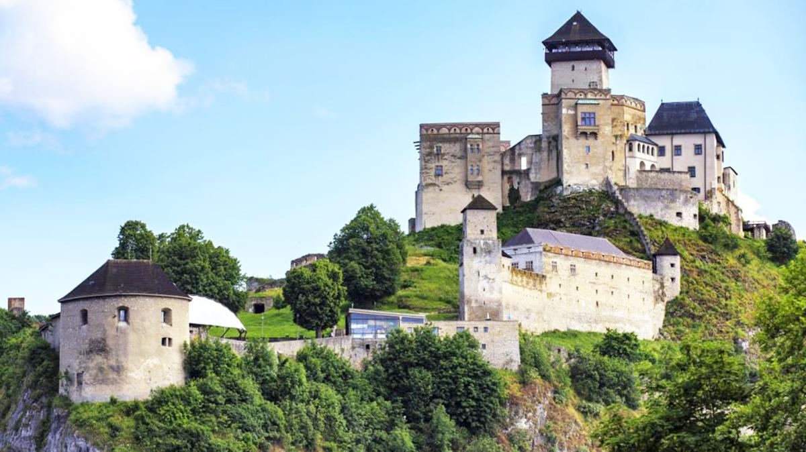
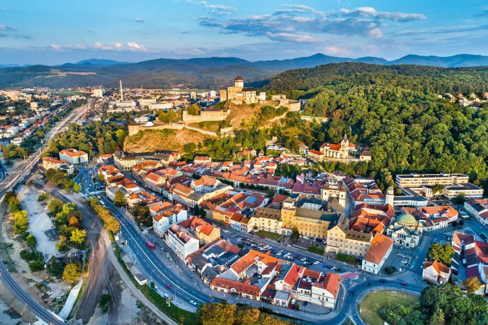
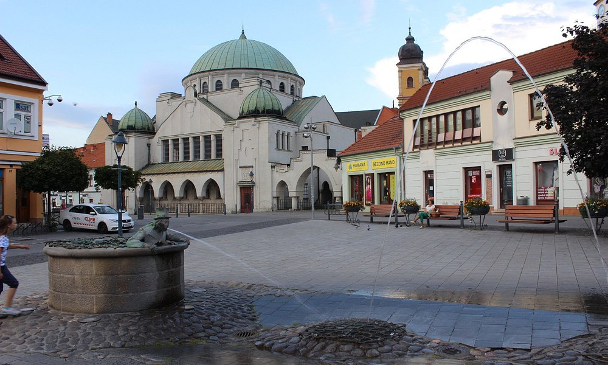
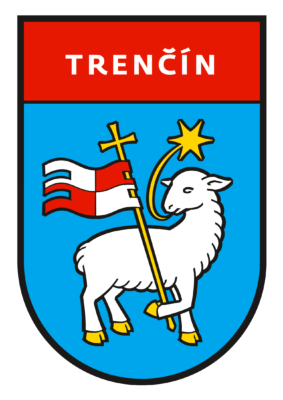

Trenčín (lat. Trentsinium alebo Laugaricio, nem. Trentschin) je jedno z troch najstarších slovenských miest a zároveň najväčšie a krajské mesto Trenčianskeho kraja.
Trenčín sa nachádza v severo-západnej časti Slovenska, je prirodzeným geografickým centrom stredného Považia. Hlavným tokom v meste je rieka Váh. Mesto je vzdialené približne 120 km severovýchodne od hlavného mesta Slovenska – Bratislavy. Vďaka strategicky výhodnej polohe miesta tu bol vybudovaný Trenčiansky hrad. Aj v súčasnosti je Trenčín významným centrom obchodu, hospodárstva, kultúry a športu. Svoje sídla a pobočky tu majú mnohé inštitúcie a spoločnosti. Dlhoročnú tradíciu v meste majú výstavy a veľtrhy, mesto je známe i ako mesto módy.
Podľa Štatistického úradu SR je Trenčín 8. najväčším slovenským mestom podľa počtu obyvateľov. Z hľadiska administratívneho členenia Slovenskej republiky je správnym centrom Trenčianskeho kraja, ktorý tvorí 9 okresov: Bánovce nad Bebravou, Ilava, Myjava, Nové Mesto nad Váhom, Partizánske, Považská Bystrica, Prievidza, Púchov a samotný Trenčín.
Trenčiansky úsek stredného Považia zároveň možno považovať za jednu z najsúvislejšie urbanizovaných aglomerácií na Slovensku. Predstavuje ju predovšetkým územie tiahnúce sa 20 kilometrov na severovýchod od Trenčína, na ktorom leží postupne päť miest – Nemšová, Trenčianske Teplice, Nová Dubnica, Dubnica nad Váhom a Ilava.
Viac na Wikipedia.
Trenčín patrí spolu s Nitrou a Bratislavou k trom najstarším mestám na Slovensku, ktoré kroniky spomínajú už v 11. storočí. Jeho strategicky kľúčová poloha v blízkosti troch karpatských priesmykov na križovatke obchodných ciest z neho vždy robila významný oporný bod a správne centrum celého stredného Považia.
Najstaršie archeologické nálezy dokladajú prítomnosť človeka v Trenčíne a okolí už v Praveku pred 200 000 rokmi. Staroveké osídlenie reprezentuje sídelná lokalita Maďarovskej kultúry z 2. tisícročia pred n. l. z obdobia mladšej doby bronzovej na hradnej skale a pozostatky sídliska Lužickej kultúryz neskorej doby bronzovej z prelomu 2. a 1. tisícročia pred n.l. na hradnej skale a v priľahlej časti Breziny. V rovnakej lokalite odhalil archeologický výskum i pozostatky osídlenia ľudu Púchovskej kultúry z doby železnej. V 2. a 1. storočí tu existovalo opevnené sídelné a obchodné stredisko z obdobia neskorého Laténu, ktorého keltské obyvateľstvo udržiavalo obchodné vzťahy s Keltami na strednom Dunaji, ako o tom svedčí nález zlatej keltskej mince typu Athena Alknis a dve strieborné tetradrachmy typu Biatek bratislavských Bójov.
Už v storočiach pred príchodom Keltov viedla územím Trenčína cez Vlársky priesmyk a ďalej povodím Moravy jedna z vetiev slávnej Jantárovej cesty, ktorou putovali etruskí, grécki a neskôr rímski obchodníci zo stredomorskej oblasti na Pobaltie. Zo severu privážali vzácny jantár, za ktorý platili luxusnými výrobkami antických remeselníkov a vínom.
Viac na Wikipedia.
| Názov | Vek | Lokácia |
|---|---|---|
| Trenčiansky hrad | 2. storočie | Nedá sa minúť |
| Farské schody | 1568 | Pod Hradom |
| Rímsky nápis na hradnej skale | rok 179 | Za hotelom Elizabeth |
| Morový stĺp | rok 1712 | Mierové námestie |
| Mestská brána | 15. storočie | Pri Kebabizni |
| Katov Dom | 1580 | Matúšová ulica |
   